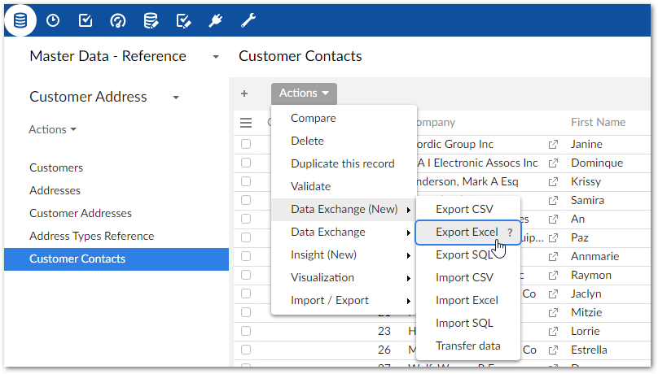
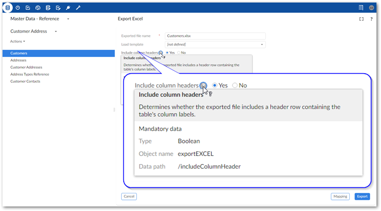
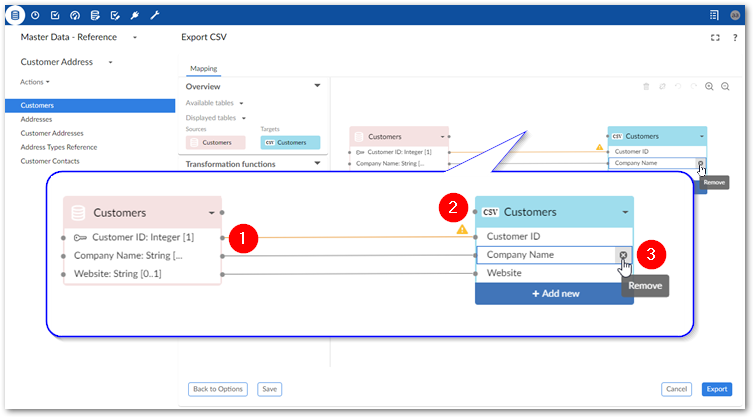
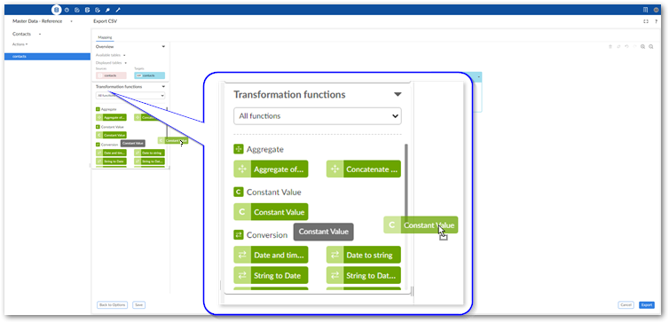
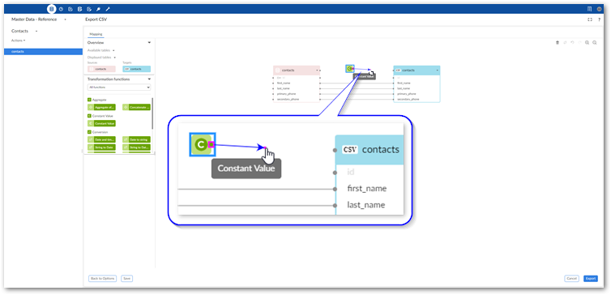

To export data to a CSV file, Excel file, or SQL table:
Initiate the export process:
Navigate to the table you want to use as the source.
Initiate the export process from the table by selecting Actions > Data Exchange (New) and choosing one of the following options: Export CSV, Export Excel, or Export SQL. Administrators must configure the available SQL sources to enable the SQL export option.

Specify target information:
For CSV and Excel: Provide a file name and check the default options.
For SQL: Select the SQL data source, SQL target table, and check the default options.
If you have questions about the default options, hover your mouse over the label and select the '?' icon to see a description:

Optionally, update or create mappings:
The following steps provide only high-level mapping instructions. See Mapping interface reference for more detailed information on mapping and transformations.
Select Mapping to enter the mapping screen where you can update the default data mappings or add data transformations. For Excel and CSV export, the add-on automatically creates mappings where the source and target have the same labels. For SQL export, mappings are automatically created when the label and data type match. A mapping identifies which data is extracted from the source and where it is extracted to in the target.
The following image and list describe some features of table and field mapping:

1) | Mappings: Each line is a mapping. Drag from one field's connection point to another to create a mapping. An orange color and icon indicates there is a warning for a mapping. Select the icon to view the warning. In these cases, where possible, the add-on will perform a default transformation. |
2) | Source (pink) and target (blue) tables: By default, the data source displays on the left and includes data type an cardinality for fields. The target table on the right shows the field names that are included in the exported file. Each table header has a label and uses an icon to show its type and selecting the small arrow collapses and expands the table. The headers also have connection points. Drag this top point to automatically generate mappings between tables. |
3) | Adding, editing, and removing fields (not available for SQL export): You can add additional fields in the target file by selecting Add new. For instance you might want to use a transformation function to split a Full Name field into First Name and Last Name in the target. Double-click to edit field names. Hover your mouse over the field and select the 'x' icon to remove them. |
Optionally, add transformation functions:
Transformation functions allow you change the source data to meet technical or business requirements in the target. The add-on ships with several transformation functions that support common business cases. For more details on how to use transformation functions, see Mapping interface reference. For information on the available transformations and their descriptions, see Transformation function reference.
To add a transformation, select and drag the desired transformation function to the mapping screen.

Select and drag fields from the source to the function's input (left) and connect the function's output (right) to target fields. In the example shown below a constant value is output to the target, so only the function's output is mapped.

Double-click the transformation function to edit its parameters. Each function is different, for a complete list, see Transformation function reference.
Optionally, select Save to store your settings as a template for re-use. For more information on using templates, see Using templates.
Click Export to complete the process.